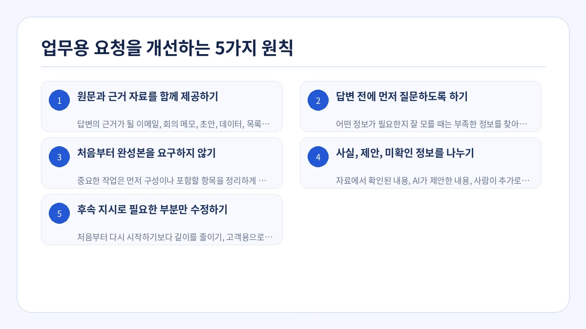
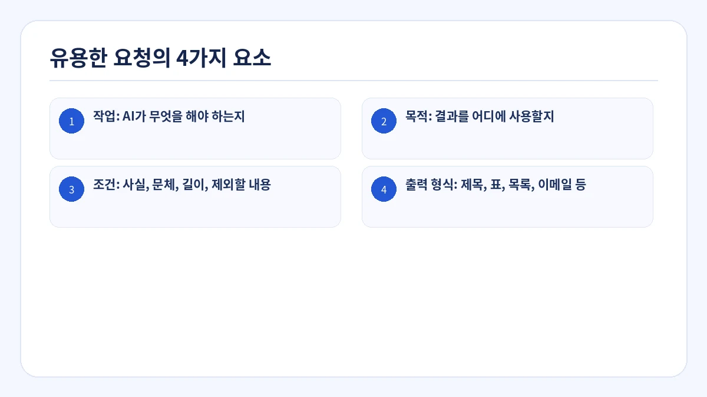
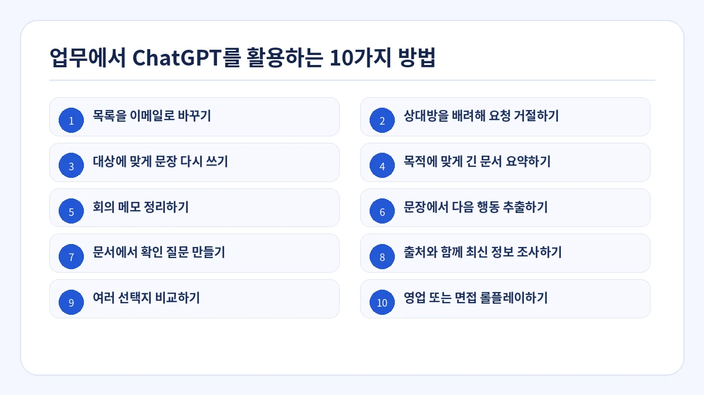
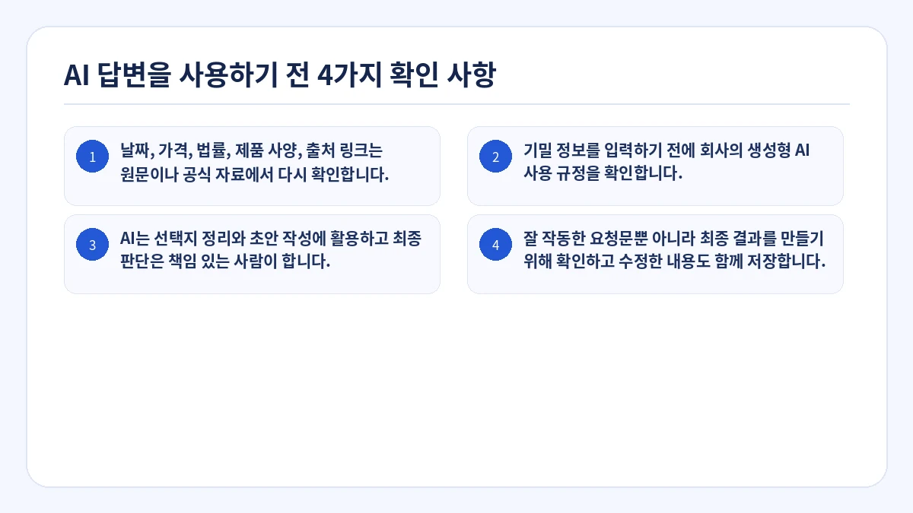

이 글에서는 ChatGPT를 업무에 활용하는 실용적인 방법을 설명합니다. 마법 같은 프롬프트를 외우는 것이 아니라, 작업에 필요한 배경과 조건, 출력 형식을 명확히 전달하는 것이 핵심입니다.
예시 요청문을 복사한 뒤 대괄호 안의 내용을 자신의 상황에 맞게 바꾸고, 실제 업무에 사용하기 전에 결과를 확인하세요.
핵심 요약
- AI가 처음부터 모든 내용을 만들게 하지 말고 이메일, 메모, 자료 등 원문을 함께 제공합니다.
- 필요한 정보가 부족하면 최종 답변 전에 먼저 질문하도록 지시합니다.
- 복잡한 업무는 구성, 검토, 작성 단계로 나눕니다.
- 정확성이 중요할 때는 사실, 제안, 미확인 정보를 구분합니다.
- 첫 답변을 초안으로 보고 수정할 부분을 구체적으로 추가 지시합니다.

1. 원문과 근거 자료를 함께 제공하기
답변의 근거가 될 이메일, 회의 메모, 초안, 데이터, 목록을 붙여 넣고 자료에 없는 사실은 추가하지 않도록 요청합니다.
2. 답변 전에 먼저 질문하도록 하기
어떤 정보가 필요한지 잘 모를 때는 부족한 정보를 찾아 최대 3개까지 질문한 뒤 답변하도록 요청합니다.
3. 처음부터 완성본을 요구하지 않기
중요한 작업은 먼저 구성이나 포함할 항목을 정리하게 하고 방향을 확인한 뒤 최종 문장을 작성하도록 합니다.
4. 사실, 제안, 미확인 정보를 나누기
자료에서 확인된 내용, AI가 제안한 내용, 사람이 추가로 확인해야 할 내용을 쉽게 구분할 수 있습니다.
5. 후속 지시로 필요한 부분만 수정하기
처음부터 다시 시작하기보다 길이를 줄이기, 고객용으로 바꾸기, 결론을 먼저 두기, 근거 없는 내용을 삭제하기처럼 수정 범위를 명확히 합니다.
유용한 요청의 4가지 요소
대괄호 안의 내용을 자신의 상황으로 바꾸세요. 누락된 사실을 추측하지 말고 확인이 필요한 항목을 따로 정리하도록 요청하는 것이 좋습니다.
- 작업: AI가 무엇을 해야 하는지
- 목적: 결과를 어디에 사용할지
- 조건: 사실, 문체, 길이, 제외할 내용
- 출력 형식: 제목, 표, 목록, 이메일 등

## 작업
아래 고객 메시지에 대한 답변을 작성해 주세요.
## 목적
문제를 인지하고 있음을 알리고, 확인된 사실과 다음 조치를 명확히 전달하는 것입니다.
## 원문 및 확인된 정보
[고객 메시지와 내부에서 확인된 사실을 붙여 넣기]
## 조건
- 확인되지 않은 복구 시간을 약속하지 마세요.
- 확인된 사실과 아직 조사 중인 내용을 구분하세요.
- 차분하고 전문적인 문체를 사용하세요.
- 제공된 자료에 없는 사실을 추가하지 마세요.
## 출력 형식
1. 제목
2. 이메일 본문
3. 전송 전에 확인할 항목업무에서 ChatGPT를 활용하는 10가지 방법

1. 목록을 이메일로 바꾸기
받는 사람, 목적, 포함할 내용, 기한, 문체를 지정합니다.
2. 상대방을 배려해 요청 거절하기
할 수 없는 내용, 공유 가능한 이유, 실제로 가능한 대안을 전달합니다.
3. 대상에 맞게 문장 다시 쓰기
사실은 유지하면서 고객, 경영진, 초보자에 맞게 설명을 바꿉니다.
4. 목적에 맞게 긴 문서 요약하기
누가 읽고 어떤 판단을 해야 하는지 지정합니다.
5. 회의 메모 정리하기
결정 사항, 할 일, 담당자, 기한, 미결 사항을 추출합니다.
6. 문장에서 다음 행동 추출하기
읽기만 하면 되는 정보와 실제로 해야 하는 작업을 나눕니다.
7. 문서에서 확인 질문 만들기
누락, 모순, 위험, 확인이 필요한 항목을 찾습니다.
8. 출처와 함께 최신 정보 조사하기
기준 날짜, 공식 출처, 사실과 해석 구분을 요청합니다.
9. 여러 선택지 비교하기
비교 기준과 현재 상황에서 중요한 우선순위를 지정합니다.
10. 영업 또는 면접 롤플레이하기
상대 역할, 상황, 질문 규칙, 피드백 기준을 설정합니다.
AI 답변을 사용하기 전 4가지 확인 사항
- 날짜, 가격, 법률, 제품 사양, 출처 링크는 원문이나 공식 자료에서 다시 확인합니다.
- 기밀 정보를 입력하기 전에 회사의 생성형 AI 사용 규정을 확인합니다.
- AI는 선택지 정리와 초안 작성에 활용하고 최종 판단은 책임 있는 사람이 합니다.
- 잘 작동한 요청문뿐 아니라 최종 결과를 만들기 위해 확인하고 수정한 내용도 함께 저장합니다.

자주 묻는 질문
프롬프트는 길수록 좋은가요?
아닙니다. 작업에 필요한 정보가 들어 있는지가 중요합니다. 불필요한 배경이 많으면 핵심 조건이 오히려 잘 보이지 않을 수 있습니다.
답변이 기대와 다를 때는 어떻게 해야 하나요?
길이, 대상, 문체, 구조, 사실과 제안의 구분 등 무엇이 다른지 구체적으로 알려 주고 해당 부분만 수정하도록 요청합니다.
무엇을 지시해야 할지 모를 때는 어떻게 하나요?
“이 작업에 필요한 정보를 충분히 확보할 때까지 한 번에 하나씩 질문해 주세요”라고 요청할 수 있습니다.
업무 목적에 맞는 AI 요청문을 단계별로 만들기
빈 화면에서 시작하지 않고 구조화된 AI 요청문 만들기
Prompt Ready에는 이메일 답변, 회의 메모 정리, 대상별 문장 수정, 비교, 조사, 대화 연습 등 업무용 활용 항목이 준비되어 있습니다. 용도를 선택하고 원문과 조건을 입력한 뒤 사용하는 AI에 붙여 넣을 요청문을 복사할 수 있습니다.
Prompt Ready는 ChatGPT, Gemini, Claude 등에서 사용할 구조화된 요청문을 만드는 Windows 및 macOS 앱입니다. 업무를 선택하고 원문과 조건을 입력한 뒤 바로 붙여 넣을 수 있는 요청문을 복사할 수 있습니다.
Prompt Ready는 입력한 내용을 기기 안에서 처리하며 외부 AI 서비스나 개발자 서버로 자동 전송하지 않습니다. 생성한 요청문을 AI 서비스에 붙여 넣은 뒤에는 해당 서비스의 데이터 정책이 적용됩니다.
실제 업무 하나부터 시작해 대화로 요청문을 개선하세요
고객 답변, 회의 정리, 선택지 비교처럼 이미 하고 있는 작업 하나를 고릅니다. 목적, 조건, 출력 형식을 추가하고 첫 답변은 초안으로 검토하는 방식이 긴 프롬프트를 외우는 것보다 지속적으로 활용하기 쉽습니다.